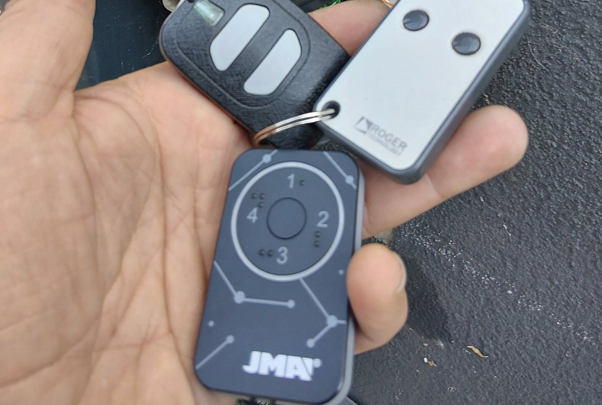

Три дистанционни в едно — копиране на скачащ и фиксиран код с JMA M-BT
Обект в Малинова долина. Клиентът носи връзка с две дистанционни — едното за портала на сградата, другото за втори обект — и всеки път вади не това, което трябва. Излизаме с едно.

Накратко: две оригинални дистанционни от различни системи — DEA със скачащ код за портала на сградата и ROGER Technology с фиксиран код с два работещи канала — влязоха в едно JMA M-BT. Три от четирите му позиции са заети, четвъртата остава свободна. В джоба стои едно дистанционно вместо връзка от три.
Случаят в Малинова долина
Картината е позната: ключове, чип за входа и две-три дистанционни на една халка. Всяко е от различен производител, всяко изглежда различно, и точно пред портала човек вади не това, което трябва.
Тук имахме две оригинални дистанционни с различна логика:
- DEA, скачащ код — един канал, за портала на сградата.
- ROGER Technology, фиксиран код — два използваеми канала.
Общо три канала, които прехвърлихме на три от четирите бутона на JMA M-BT. Оригиналите остават у клиента като резерва, а на халката вече виси едно дистанционно. Четвъртата позиция чака — ако утре се добави гараж или бариера, има къде да влезе.
Фиксиран и скачащ код — защо разликата има значение
Тези две думи решават дали една работа е петминутна или изисква посещение на обекта.
Фиксиран код
Дистанционното излъчва винаги един и същ код. Приемникът го чува, разпознава го и отваря. Просто, надеждно и лесно за копиране — затова и повечето копиращи дистанционни се справят с него.
Скачащ код
При всяко натискане дистанционното излъчва различна стойност, изчислена по алгоритъм, който приемникът следи успоредно. Записан отпреди сигнал не върши работа, защото онази стойност вече е похарчена. Точно затова скачащият код е по-сигурен — и точно затова копирането му не е „презапис на сигнал“.
На практика има два пътя. Ако марката е в списъка на поддържаните, копието се прави от оригинала и приемникът го приема като свое. Ако не е — новото дистанционно се записва директно в приемника на автоматиката, което значи физически достъп до таблото. Второто е работа на обекта, не в ателието.
Какво представлява JMA M-BT
JMA е испански производител с десетилетия в заключващата техника, а M-BT е тяхната копираща платформа. Разликата с обикновеното копиращо дистанционно е, че това не е просто устройство, а устройство плюс софтуер.
- Четири независими позиции — четири различни оригинала в един корпус, със свободно смесване на типове и честоти.
- 433,92 и 868 MHz — покрива и по-новите автоматики, където 868 MHz е стандарт.
- Около 95% от фиксираните кодове на пазара, по данни на производителя.
- Над сто марки със скачащ код, сред които Beninca, Cardin и NICE.
- Bluetooth и приложение — копирането се води от телефона стъпка по стъпка, вместо на сляпо с комбинации от бутони.
- Батерия CR2032 — стандартна, намира се навсякъде.
Защо не евтино копиращо дистанционно
Честно казано — за обикновен портал с фиксиран код и евтиното върши работа. Разликата излиза, когато нещо в картинката се усложни:
- Скачащ код. Повечето евтини устройства го „поддържат“ само на кутията. На практика работят няколко дни, докато приемникът ги изхвърли от синхрон.
- 868 MHz. Масово липсва — покрито е само 433 MHz.
- Обхват. Слаб предавател означава, че отваряте от две крачки вместо от колата, а при първото отслабване на батерията — от нула.
- Стабилност на честотата. Евтиният кварц се разминава с приемника при промяна на температурата. Оттам идва класическото „зиме не работи“.
Казано просто: плаща се веднъж за нещо, което работи, вместо три пъти за нещо, което не работи.
Какво можем и какво не
Няколко уговорки, за да няма изненади:
- Оригиналът трябва да е наличен и работещ. Без него копиране няма — тогава пътят е ново дистанционно, записано в приемника.
- Не всеки скачащ код се копира от оригинала. При част от системите се изисква достъп до автоматиката.
- За общи части е нужно съгласие. Дистанционно за портала на жилищна сграда правим за собственик или наемател, а намеса в приемника минава през домоуправителя.
- Четири позиции са таванът. При повече обекти се мисли в друга посока — например обединяване на самите приемници, както описахме в случая с претрупаната бариера.
Ако и вие разнасяте връзка с дистанционни, вижте и как обединихме гараж, бариера и портал в едно, или същото за ролетна врата с автоматика PROTECO. А ако оригиналът вече е изгубен, работи се по другия сценарий — програмиране на ново дистанционно на място.
Често задавани въпроси
Може ли да се копира дистанционно със скачащ код?
В много случаи да, но не универсално. Скачащият код сменя стойността си при всяко натискане, затова не става дума за просто копиране на сигнал. JMA M-BT поддържа над сто марки със скачащ код и при тях копието се прави от оригинала. При системи извън този списък се налага новото дистанционно да бъде записано директно в приемника, което изисква физически достъп до автоматиката.
Колко дистанционни събира едно JMA M-BT?
Четири. Всеки от четирите бутона носи код на различно оригинално дистанционно, като смесването е свободно — може едновременно да има фиксиран и скачащ код, 433 и 868 MHz. При този клиент заехме три позиции и остана една свободна за в бъдеще.
Трябва ли да нося оригиналното дистанционно?
За копиране — да, оригиналът трябва да е наличен и работещ, включително с добра батерия. Ако оригиналът е изгубен или мъртъв, пътят е друг: ново дистанционно, записано директно в приемника на автоматиката.
Какво става, ако изгубя обединеното дистанционно?
Правим ново по оригиналите, които остават у вас. Точно затова съветваме оригиналните дистанционни да се запазят, дори когато вече не ги носите на халката — те са резервата. Ако и те липсват, пътят е друг: ново дистанционно, записано директно в приемника на автоматиката.
Защо евтиното ми копиращо дистанционно спря да работи?
Най-честите причини са три: слаб предавател, който губи обхват при първото отслабване на батерията; неточна честота, която се разминава с приемника при промяна на температурата; и липса на реална поддръжка на скачащ код — такова дистанционно работи няколко дни, докато приемникът го изхвърли от синхрон.
Работи ли JMA M-BT на 868 MHz?
Да, работи и на 433,92 MHz, и на 868 MHz. Това е съществено за по-новите италиански и немски автоматики, където 868 MHz е честа, а повечето евтини копиращи дистанционни покриват само 433 MHz.
Колко време отнема копирането?
При фиксиран код — минути. При скачащ код зависи от марката и от това дали копието може да се направи от оригинала, или трябва записване в приемника. Във втория случай се уговаряме за посещение на обекта, защото работата е при самата автоматика.
Нужно ли е разрешение за портала на сградата?
За общите части — да. Дистанционно за портала на жилищна сграда се прави за собственик или наемател в сградата, а когато се налага намеса в приемника на автоматиката, минава през домоуправителя или управляващата фирма. Това е нормален ред, не бюрокрация — общата врата е обща отговорност.
Имате подобен случай?
Обадете се за оглед или консултация — работим в София с посещение на адрес.